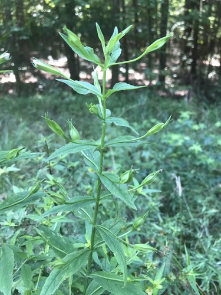

Epistrophe emarginata
Epistrophe emarginata insect
Hoverflies, Holarctic.
10 documented plant relationships.
gathers pollen at
Bee Balm (Wild Bergamot)Monarda fistulosa Broad-leaved ArrowheadSagittaria latifolia
Broad-leaved ArrowheadSagittaria latifolia Roadside Agrimony (Woodland Agrimony)Agrimonia striata
Roadside Agrimony (Woodland Agrimony)Agrimonia striata aarongunnar, some rights reserved (CC BY), uploaded by aarongunnar") SwitchgrassPanicum virgatumWater ParsnipSium suave
SwitchgrassPanicum virgatumWater ParsnipSium suave tzeducation, some rights reserved (CC BY), uploaded by tzeducation") Wild BergamotMonarda fistulosaWild MintMentha arvensis
Wild BergamotMonarda fistulosaWild MintMentha arvensis Abby Hyde, some rights reserved (CC BY), uploaded by Abby Hyde") Wild StrawberryFragaria virginiana
Wild StrawberryFragaria virginiana Douglas Goldman, some rights reserved (CC BY-SA), uploaded by Douglas Goldman") YarrowAchillea millefolium
YarrowAchillea millefolium
Broad-leaved ArrowheadSagittaria latifoliaRoadside Agrimony (Woodland Agrimony)Agrimonia striata
Square-stem MonkeyflowerMimulus ringensSwitchgrassPanicum virgatumWater ParsnipSium suaveWild BergamotMonarda fistulosaWild MintMentha arvensisWild StrawberryFragaria virginianaYarrowAchillea millefolium